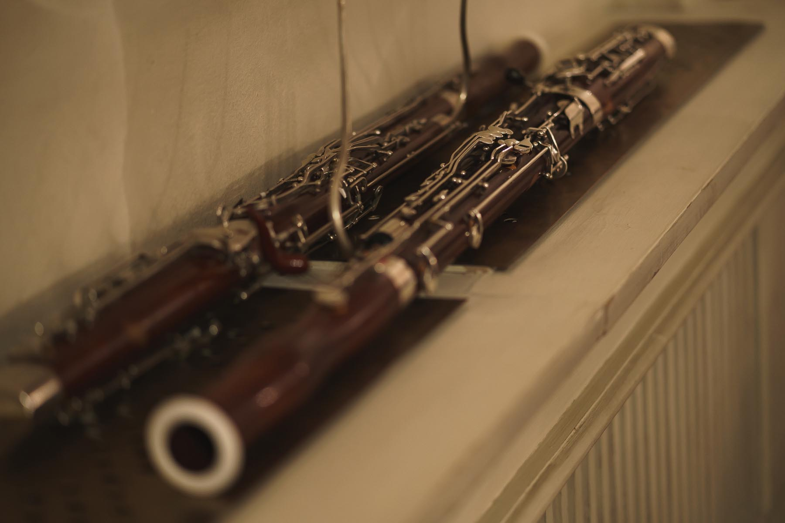
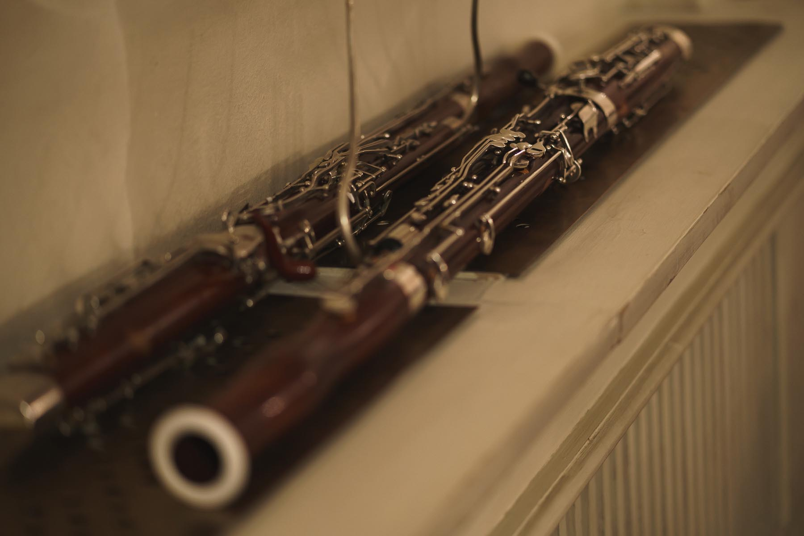

Kandinsky Orchestra
О нас
«Музыка - лучший учитель»
- Василий Кандинский.
Kandinsky Orchestra это новая платформа на музыкальной сцене Санкт-Петербурга, состоящая из молодых профессионалов и основанная немецко-австрийским дирижёром Каем Йоханнесом Польцхофером в 2019 году.
Kandinsky Orchestra объединяет прогресс и традиции, европейскую и русскую культуры, создавая новые перспективы для творчества.
Kandinsky Orchestra вдохновлен творческими идеями русского художника Василия Кандинского. Кандинский видел потенциал в синтезе искусств. Об этом написал в книге "О духовном в искусстве", был в глубокой связи с музыкой своего времени, в частности с Арнольдом Шёнбергом. Был "гражданином" Востока и Запада, не зная границ в своём творчестве.
Следуя этому пути, Kandinsky Orchestra исполняет признанные классические шедевры и сочетает их с современной музыкой, которая редко или никогда вовсе не исполнялась в России. Цель нашей работы - взаимодействие с другими видами искусств. В предстоящем сезоне Kandinsky Orchestra проведёт концерты при участии танцоров-эвритмистов из дуэта Muza Eurythmy, хореографом Дарьей Вергизовой из Balett.Theatre, режиссёрами Иваном Заславцем и Филиппом Джевиш/Philip Jewitsch.
 
